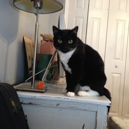

Sophie
- Age
- 4
- Gender
- Female
We believe that everyone deserves a second chance. This philosophy has driven us to build the Bay Area's most state of the art facilities where we help cats become the healthiest they can be before they find a new family.
Enter your email address in the form below to stay up to date with our residents and to learn more about how you can help cats live the best nine lives possible!